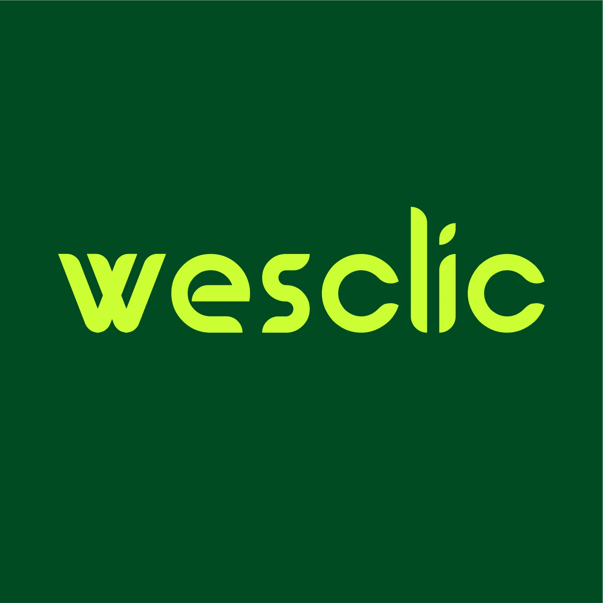
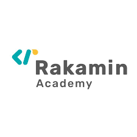

Leadership
Project & Product Management
Leading cross-functional teams, managing stakeholders, and delivering digital products using Agile & Scrum framework.
PORTFOLIO / PERSONAL BRAND
Product Management . Project Management · Product Strategy · Data Science
Hello, I’m Medy Febriyansyah
Graduated in Information Systems with strong hands-on experience in Product Management, Project Management, and Data Science. Skilled in Agile & Scrum, product discovery, stakeholder communication, data analysis, and data visualization.
Passionate about transforming data-driven insights into actionable strategies that improve decision-making, product value, and user experience.

Professional Snapshot
About Me
Graduated in Information Systems, with strong interest and hands-on experience in Product Management, Project Management, and Data Science.
Skilled in Agile & Scrum framework, product discovery, product lifecycle management, stakeholder communication, data analysis, and data visualization.
Experienced in applying design thinking, business analysis, and financial modeling to drive product growth and project success.
Passionate about transforming data-driven insights into actionable strategies that improve decision-making, product value, and user experience.
IPK 3.81/4.00 · AAEPT 564 · TOEFL 633
Project & product roles
Digital initiatives delivered
GPA in Information Systems
TOEFL score
Leadership
Leading cross-functional teams, managing stakeholders, and delivering digital products using Agile & Scrum framework.
Analysis
Data screening, analysis, machine learning implementation, and data visualization to drive business decisions.
Design
Applying design thinking methodology, wireframing, prototyping, and user research to create impactful product experiences.
Career Journey
From startups to enterprise clients, each role strengthened my ability to lead delivery, align stakeholders, and drive product value.
PT Gits Indonesia
May 2026 – August 2026
Leading multiple enterprise-scale projects with full ownership of delivery, stakeholder alignment, and team coordination.
PT Gits Indonesia
November 2025 – May 2026
Managed and co-managed multiple enterprise-scale initiatives with structured execution and stakeholder coordination.
PT Qiscus Tekno Indonesia
July 2025 – December 2025
Led execution of 7 major AI-focused initiatives with Agile coordination, client communication, and cross-functional team management.

PT Wesclic Indonesia Neotech
October 2024 – March 2025
Led app development projects and UI/UX design initiatives using Agile Scrum methodology and Asana for management.

PT Rakamin Academy
April 2025 – May 2025
Built product management foundations in stakeholder management, problem framing, and product release.
Rakamin Academy x NiagaHoster
April 2023 – May 2023
Learned and applied UI/UX fundamentals through design thinking methodology and prototyping.
VINIX
November 2022 – February 2023
Optimized sales of training products through market analysis and marketing funnel strategies.
TAM Group
January 2023 – February 2023
Optimized product sales through social media marketing and brand awareness strategies.
Featured Projects
From AI platforms and enterprise systems to mobile apps and UX redesigns — each project strengthened my delivery capability.
Role: Project Manager
Led delivery of warehouse management platform with emphasis on operational clarity, stakeholder coordination, and execution flow.
Role: Project Manager Lead
Managed delivery of AI Agents for Instaperfect, OMG, Paragon, and Makeover brands across multiple social media platforms.
Role: Project Manager
Managed development of AI-based audit platform with cross-functional team coordination and Agile delivery.
Role: Project Manager
Managed JRKU Approval, Mobile Service, Rebuild, External, and Web Partner projects for Jasa Raharja.
Role: Project Manager
Led mobile app delivery across transportation, health center information system, and Muhammadiyah lifestyle contexts.
Role: Project Manager
Developed a system that automatically assigns broadcasting agents when users respond to a broadcast, ensuring stable broadcast-agent integration.
Role: Scrum Master & Lead Business
Built a waste tracking system for TPS Gosari with Scrum framework, market research (TAM, SAM, SOM), and stakeholder needs collection.
Role: Scrum Master
Facilitated a three-sprint digital product cycle with PRD creation, pitch deck delivery, design thinking, and burndown chart tracking.
Role: Data Scientist
Identified product package combinations using R programming, market basket analysis, and statistical analysis of sales transaction data.
Role: UI/UX Designer
Revamped Maxim app with Design Thinking method, including empathy maps, wireframing, design systems, and high-fidelity prototype.
Role: Chairman / Founder
Created cleaning products from fruit waste with 7P marketing analysis, financial projections, and growth plan strategy.
Role: Assistant Project Manager
Supported delivery of a comprehensive mobile lifestyle application for the Muslim community with Scrum framework.
Role: Project Manager Lead
Led execution of immigration complaint form project for the Indonesian Ministry of Manpower and Immigration.
Role: Co-Project Manager
Co-managed the merchant platform project for myPertamina with structured coordination and delivery tracking.
Project Gallery
A visual look at dashboards, platforms, and documentation from the initiatives I led or contributed to.


Core Strengths
A diverse skill set combining hard skills, soft skills, and technical tools for end-to-end delivery.
Community & Leadership
Active involvement in campus organizations, startup communities, and social initiatives.
Member of the Community
November 2025 – Now
A collection of startup founders in Bandung. Participating in community events from startup training to soft skills development and cross-team collaborations.
Member of the Community
March 2021 – Now
A collection of startup founders in Jakarta. Participating in community events and collaborations between teams and startups.
Secretary of Media and Technology Department
February 2025 – October 2025
Responsible for providing education on Sharia Economics and optimizing potential talent interests of cadres through competitions and work programs.
Coordinator of the Ministry of Home Affairs
June 2023 – July 2024
Coordinated campus activities, actively addressed campus issues and problems, and served as a forum for student aspirations regarding campus policies.
Rabbani Economist MSME Ambassador
February 2023 – November 2023
Served as MSME Ambassador under FOSSEI in Yogyakarta, participating in startup training events and facilitating collaborations between teams and startups.
External Department Coordinator
March 2021 – March 2022
Built external relations between study programs, contributed to activities outside the study program scope, and ensured work program success.
Recognition
Recognition from campus ambassador programs, business plan competitions, and national-level contests.
1st Place — Campus Ambassador
November 2022
Winner as 1st Place Campus Ambassador of Alma Ata University in 2022.
1st Place — PKM-K (Entrepreneurship)
January 2023
Won the campus level PKM idea competition in the field of entrepreneurship in 2023 and 2022.
Participant — User Experience
August 2022
Participated in Gemastik competition in the field of User Experience Design.
Credentials
A mix of formal education and practical upskilling in management, product, data, and digital technology.
Alma Ata University, Yogyakarta
August 2021 – September 2025
Data Analysis, Data Visualization, System Integration, Design Thinking, UML, Business Process Analysis, Supply Chain Management, Basic Programming, Risk Management, Enterprise Architecture, Digital Innovation, and more.
GPA 3.81/4.00 · AAEPT 564 · TOEFL 633
ESAS Management, Jakarta
April 2025
32-hour training on IT roles, project management, information security, vendor coordination, application lifecycle, virtualization, storage solutions, and security logging operations.
Final Grade: 89.8/100
Binar Academy — Independent Campus Program
August 2023 – January 2024
Fresh Graduate Academy — Kominfo
July 2025 – August 2025
MICROCREDENTIAL Program
October 2024 – December 2024
Dsarea
March 2025 – April 2025
DQLab
November 2023 – March 2024
Myskill Intensive Bootcamp
March 2023
Contact
Open to professional opportunities, collaboration, and conversations around project delivery, product direction, and digital execution.
Bantul, Yogyakarta, Indonesia